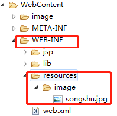

通常情况下，项目中所包含的图片是直接放在WebContent下面的，但是因为业务需求要保证图片的安全性的时候就需要另想他法了，因为WebContent下的文件可以直接访问。WEB-INF下的文件不允许直接的公共访问，所以把jsp页面、js、图片等放进去可以保证安全性。
但是如何将WEB-INF下受保护的图片显示在客户端的页面上是一个问题。在这个问题上卡了很久，终于找到了解决方法。下面贴出解决方法共享。
spring.3.0.4以后版本提供了\< mvc:resources / >,\< mvc:resources / >允许静态资源放在任何地方，如WEB-INF目录下、类路径下等。通过location属性指定静态资源的位置，由于location属性是Resources类型，因此可以使用诸如”classpath:”等的资源前缀指定资源位置。传统Web容器的静态资源只能放在Web容器的根路径下，\< mvc:resources / >完全打破了这个限制。
文件目录

web.xml配置
1 | <!-- 配置DispatcherServlet --> |
在spring-web.xml添加配置
1 | <mvc:resources location="/WEB-INF/resources/" mapping="/resources/**" /> <mvc:default-servlet-handler/> |
\< mvc:resources / >中的location属性：指定静态文件的位置。mapping属性：指定访问时url，”/**”表示resources下可以有多级文件路径。
这样就可以通过设置的mapping来访问WEB-INF下面的资源了。
需要注意两句话的顺序不能颠倒，原因未知。博主因为颠倒顺序一直卡了好久。
在jsp中访问
1 | <img src="<%=request.getContextPath()%>/resources/image/songshu.jpg" width="200" height="300"/> |
需要注意的是，使用此方式需要导入版本大于3.0.4的spring框架的jar包到WEB-INF/lib目录下，否则，在开发环境下会产生对resources元素没找到情况。